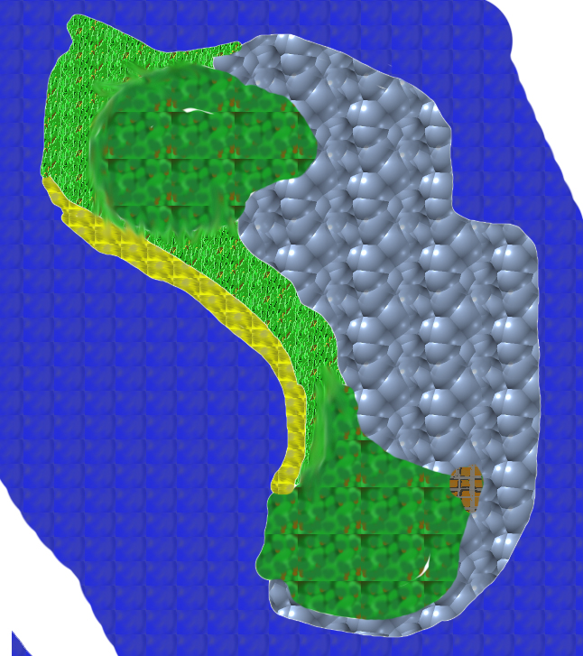

back
Cat Island

Cat Island is off the coast of the main Continent and as the name suggest, it is the homeland of catfolk. The Island is difficult to reach by boat because of the many sea creatures and difficult sea, but adventurers manage to go from time to time still.
Cities: The one city on the island is Nyanta. The city is made on top of trees and you have to jump from branches to branches to reach the many commerce and house that are present there. Catfolk are very communal, but they are aware of the outside world and accept for adventurers to stay the night and trade with them. There is no real king of organization in the town, but Catfolk are very respectful and are not very aggressive by nature.
Landmark:
The one major landmark of Cat Island is a place named Treasure Cove. It is inaccessible from the island itself and you have to go near it by boat and go underwater to reach the entrance. It is defended by a mighty beasts named Great Blue and it is filled with many treasures and endless fortune. It is unknown how some of the treasures got there, but a lot of magical equipment and weapon have been left by the adventurers who lost their lives trying to get to the treasure room.
Environment:
Cat Island is very tropical and the forest there are jungles instead. It rains quite often, but it is hot and humid most of the time. The large mountains that are part of the island are climable, but there is very little point to do so.
Wildlife and Monsters:
The wildlife on Cat Island can be vicious sometimes, people from the continent are not used to fighting in the jungle and the animal there are rather aggressive, move in with caution.